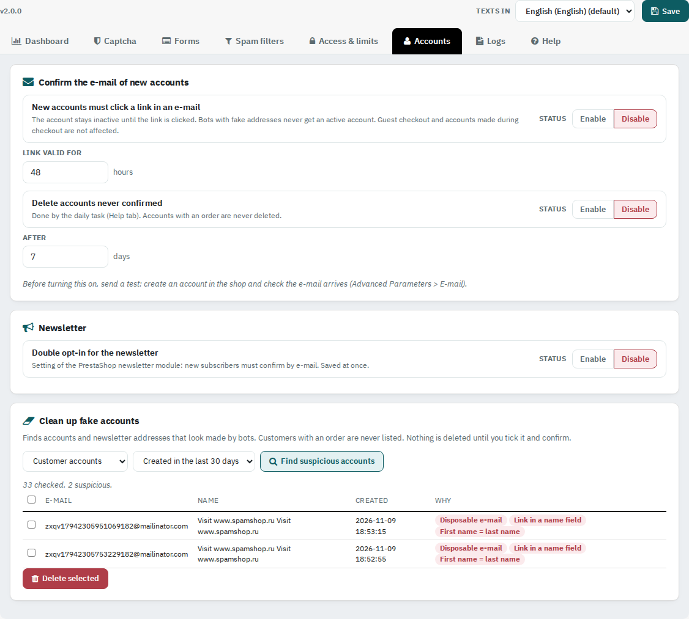
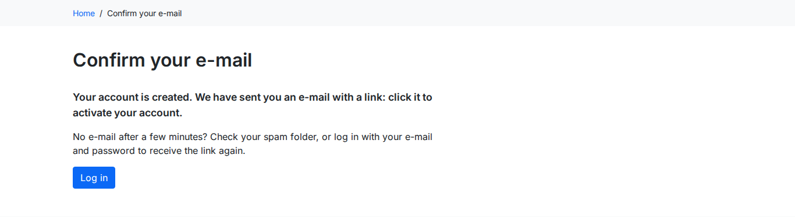

Ask new customers to confirm their e-mail, switch on the newsletter double opt-in and remove fake accounts already in your shop.

New accounts stay inactive until the customer clicks the link in an e-mail, so bots with fake addresses never get an active account. Guest checkout and accounts made during checkout are not affected. If the customer tries to log in first, the link is sent again. Delete accounts never confirmed removes them after the days set (by the daily task); accounts with an order are never deleted.

A switch for the setting of the PrestaShop newsletter module: new subscribers must confirm by e-mail. It is saved at once.
Choose Customer accounts or Newsletter addresses and a period, then click Find suspicious accounts. Each row shows why it looks fake: link in a name field, disposable or banned e-mail, random letters, first name = last name, blocked writing system. Customers with an order are never listed. Tick the rows and click Delete selected.